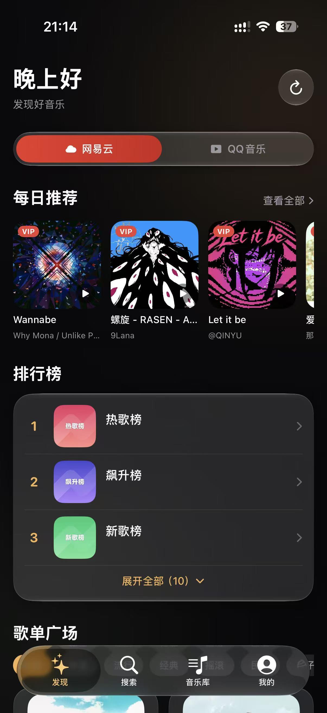
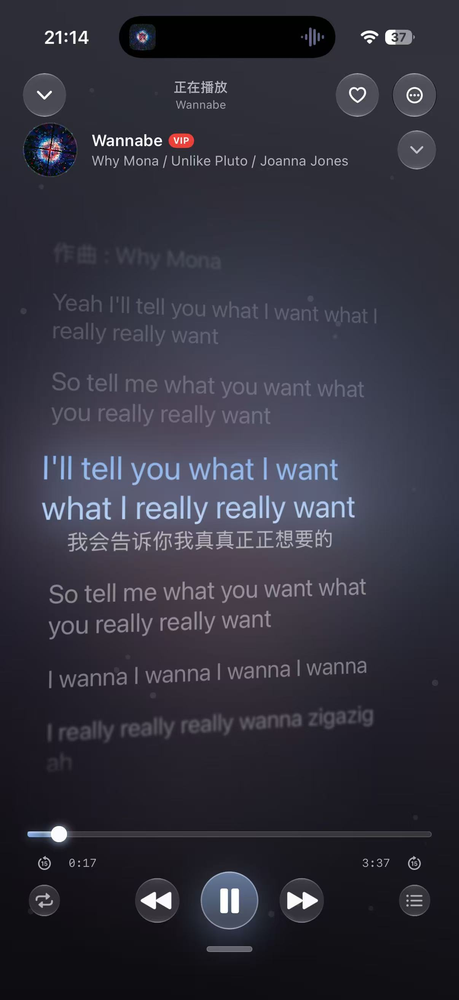
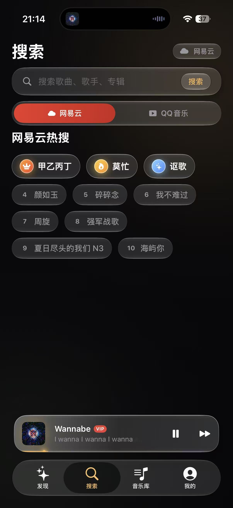
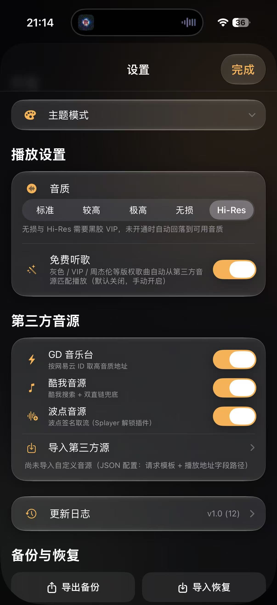

Beans Music
iOS 26 原生液态玻璃（兼容 iOS 16+）· 聚合网易云 / QQ音乐 · 纯 SwiftUI · 完全开源
📱 软件预览








🎨 DIY 美化：你的播放器你做主
🌈 全局主题色盘
内置 9 套主题色一键换肤；更可打开色盘任选颜色，整个 App 的强调色、按钮、进度条全部跟随。
🖼️ 自定义壁纸库
上传多张壁纸存入壁纸库，随时切换替换；支持浅色 / 深色两套背景，主页、搜索、音乐库全局同步。
🧊 玻璃材质自由切换
iOS 26 原生液态玻璃与磨砂玻璃一键切换，底栏、卡片、播放器、弹窗质感统一跟随。
📐 底部布局自由拖动
进度条、控制按钮、指示线支持 XY 自由拖动与缩放，悬浮窗实时预览，一键恢复默认。
💬 歌词全套定制
当前行 / 未播放行 / 发光颜色色盘任选，渐变、辉光、模糊、字号、对齐、3D 立体倾斜全可调。
✨ 进度条与氛围
流光 / 辉光 / 极光 / 波浪 4 种进度条样式，DJ 节奏脉冲光效，圆形封面模式 + 自动旋转。
✨ 为什么它很强大？
🎧 双平台聚合
网易云 / QQ 音乐一键切换：每日推荐、排行榜、推荐歌单、搜索、热门搜索全部跟随平台。
🔐 双平台账号登录
网易云扫码 / 网页登录、QQ 扫码 / 网页 / Cookie 导入，同步歌单、收藏、听歌排行与 VIP / SVIP 标识。
🎨 封面即主题
动态封面取色：背景渐变、进度条、按钮、歌词高亮全部实时跟随专辑封面主色。
💬 专业级歌词定制
逐行跟随、点击跳转、翻译、色盘自定义颜色 / 渐变 / 发光 / 模糊、3D 立体倾斜、长按多选复制。
🖼️ 液态玻璃界面
iOS 26 原生 Liquid Glass，深浅色自适应，9 套主题色，液态 / 磨砂可切换。
🎛️ 全自由度定制
自定义壁纸库、全局背景同步、底部布局自由拖动、进度条 4 种样式、DJ 节奏光效。
⚡ 播放能力拉满
5 档音质、免费听歌、第三方音源、歌曲下载、锁屏控制、后台播放、队列、倍速、睡眠定时。
📊 数据全同步
听歌排行、播放历史、歌单云端同步，设置配置支持一键备份与恢复。
🧑💻 关于作者
作者本人什么都不会 🤡
本软件由 OpenAI Codex 编程助手开发，从需求分析、UI 设计到代码实现全程由 AI 完成。
连这篇介绍也是 AI 写的。
不喜勿喷，纯新手小学生，欢迎温柔指教 🙏
📄 开源说明
本项目为开源软件（MIT License），代码完全公开透明。
- 支持 Issue 反馈 与 Fork 学习，欢迎任何人学习、修改、二次开发。
- 构建产物（未签名 IPA）发布在 Releases，支持 iOS 16+（iOS 26 上为原生液态玻璃），自行签名安装（Sideloadly / AltStore / 爱思助手）。
- 非官方 API 属逆向学习范畴，请尊重各平台服务条款，合理使用。
⚠️ 重要提示
- 该项目为第三方逆向 API 音乐客户端，并非网易云音乐、QQ音乐官方软件，使用有账号封禁风险。
- IPA 包需要自签才能安装，普通苹果手机不能直接安装。